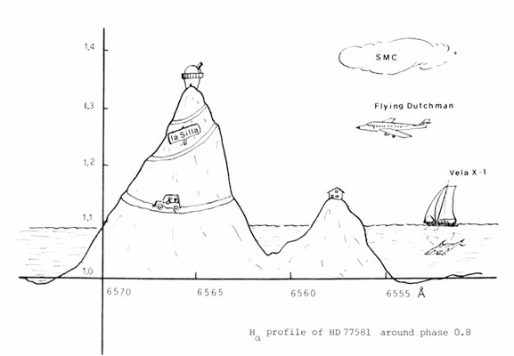

Per Aspera ad Astra

Always in the frontline, THE MESSENGER brings, for the first time – and in stiff competition with other journals – an example of the newest direction in contemporary art. Entitled "Per aspera ad astra", this drawing by J.M.M. van Lith of the modern Dutch school reconfirms the impact of applied astronomy upon other disciplines. From the PhD thesis of Dr. Zuiderwijk.
© The ESO Messenger (Editor: Richard West)